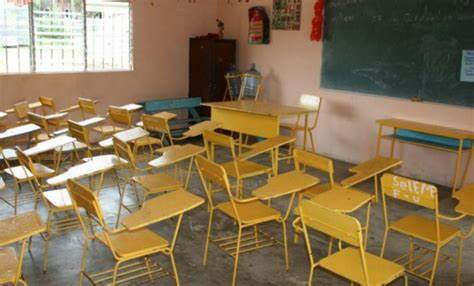

la iglesia
fue costruida en los 1850
su construccion fue muy costosa debido a que antes no era tan fasil acer bidrio

el auditorio
fue costruido en los 1980
aquise selebran algunos eventos

la biblioteca
fue costruida en los 1970
en esta biblioteca se tienen libros de todo tipo ex: historia ,ciensia ,ficcion ,etc
logros escolares
primer lugar en el debate interescolar sobre la contaminasion
aqui los alumnos se pudieron expresar sobre este problema
segundo lugar en la competensia de ciensias inter escolar
aqui todos los niños presentaron sus maquetas y sus exposisiones
segundolugarenla competensiainter escolar de futball
en este evento los niños dieron su maxima capasidad para correr
novesdades
-
Nuevo comedor escolar
considerando las opsiones de comida y las responsabilidades de lav escuela,la cafeteria debe organisarse mejor y se mas efisiente que en años anteriores. debe contener un menu digital co fotos y definisiones exacxtas de los ingredientes, para que el alumno y sus padres elijan los platillos mas nutritivos,se les debe otorgar una cuenta espesial para cada persona que entre a la cafeteria, para llevar un registro con los alimentos consumidos con el fin de que puedan segir con sus lineamentos dieteticos. otro benefisio de un menu digital es que te tardarias menos tiempo ordenando.
-
implementasion de un sistema en linea

1:presision -> todos los seres humanos cometemos herrores ,por eso inventamos este sistema muy efisiente para proporsionar informasion veridica sobre el rendimiento escolar.
2:economia->con este sistema se podrian evitar muchos gastods por reportes de pago erroneos
3:productibidad->este sistema te ayuda a jestionar y monitorear toda la informasion que resivas de tu hijo automatica y efisientemente